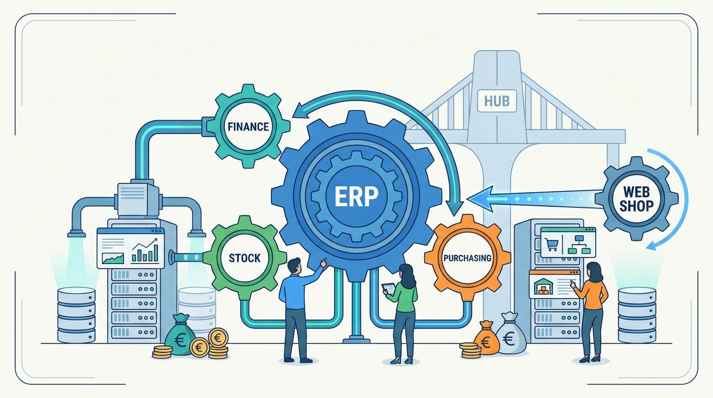

Part V — CHANNELS: Selling Everywhere
The Back Office: ERP Integration and Who Is the Hub
AI-assisted: researched and written with Claude Code, images generated with the Gemini API. How this works

Part V — CHANNELS: Selling Everywhere
AI-assisted: researched and written with Claude Code, images generated with the Gemini API. How this works
